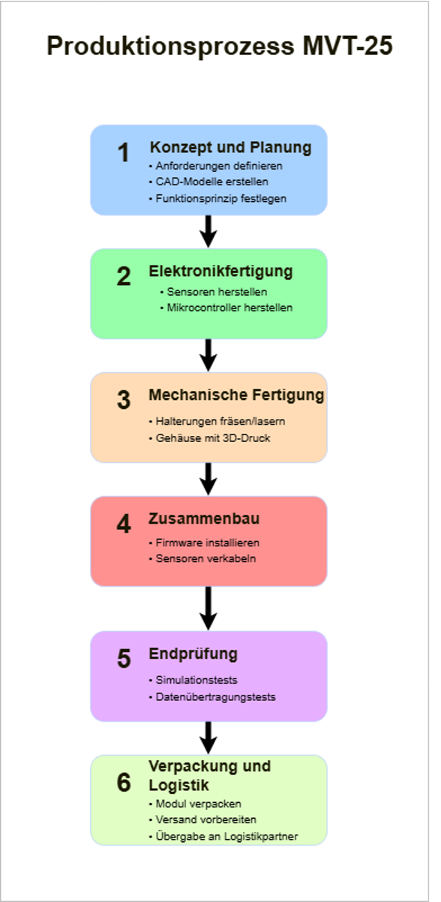

MVT-25
Digitale, personenspezifische Erfassung von Schussabgaben
Automatisiertes System zur Munitionsverwaltung für Militär und Schiessstände.
Projektidee
Das MVT-25 ist ein modulares Hardware- und Softwaresystem zur automatischen Erfassung von Schussabgaben. Ziel ist es, manuelle und fehleranfällige Prozesse durch digitale, nachvollziehbare Abläufe zu ersetzen.
Unsere Lösung
- Sensor direkt an der Waffe
- Automatische Datenerfassung
- Zentrale Auswertung
- Personenspezifische Zuordnung

Produktionsprozess
Der Produktionsprozess umfasst die Entwicklung, Fertigung, Montage und Endprüfung der MVT-25 Komponenten. Hardware und Software werden dabei eng aufeinander abgestimmt.
Prototyp
Erste funktionale Prototypen wurden entwickelt und getestet. Die Bilder zeigen den aktuellen Entwicklungsstand im praktischen Einsatz.
Fakten & Kalkulation
Übersicht über Wirtschaftlichkeit und Projektkennzahlen.
Das Fact Sheet fasst die wichtigsten technischen und wirtschaftlichen Eckdaten des Projekts kompakt zusammen.
Team
Jonas – Antreiber
Peter – Spezialist

Niklas – Vernetzer
Anja – Umsetzerin